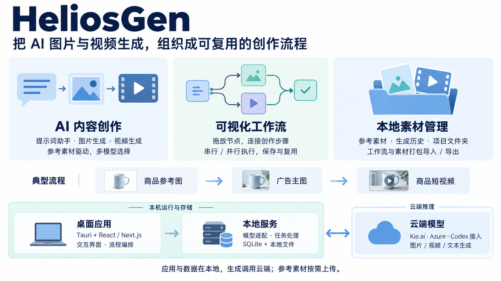

01 / 创作
把想法变成内容
提示词助手、图片和视频生成。按模型选择参考素材与参数，快速验证创意。
007 / HELIOSGEN
面向图片与视频创作的桌面应用，支持提示词辅助、节点工作流与本地素材管理；通过云端模型 API 适配和依赖调度串联生成任务，减少重复操作、复用创作流程；可扩展更多模型、本地推理、任务恢复、成本控制与行业模板。

01 / 创作
提示词助手、图片和视频生成。按模型选择参考素材与参数，快速验证创意。
02 / 编排
用节点和连线组织操作。图片与视频节点按依赖分批执行，流程可以保存和复用。
03 / 沉淀
本地保存参考素材和生成历史，用文件夹管理，并打包分享工作流及引用素材。
三块架构：Tauri + React / Next.js 承担交互与编排；本地 Node.js 服务处理模型调用和任务状态，SQLite 与文件系统保存数据；Kie.ai 为主要模型入口，部分能力可选 Azure 或 Codex CLI 对应的云端路径。
五个业务对象：工作流保存方案，节点定义步骤，连线传递输入，任务跟踪执行，素材承接产出。适合借鉴 AI 创作应用如何组织业务与模型接入。
扩展方向：任务可靠性、统一模型适配、行业模板、成本管理、本地推理接入。以上为研究建议。
当前边界：自动执行主要调度图片与视频节点；Veo 轮询、大视频上传和失败恢复仍需完善。本次核对为静态源码研究，未运行付费生成。
查看源码依据与完整边界 ↗